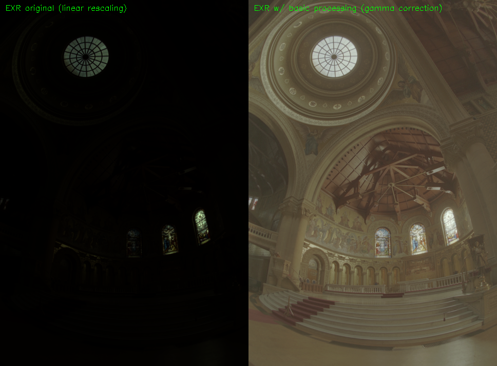
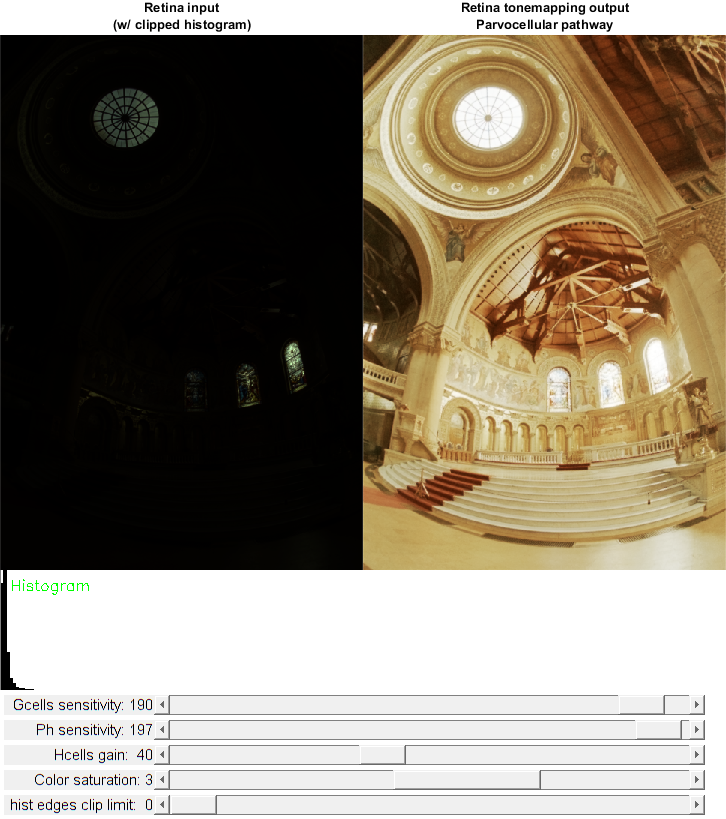

Contents
OpenEXR images HDR Retina tone mapping demo
High Dynamic Range retina tone mapping with the help of the Gipsa/Listic's retina.
Retina demonstration for High Dynamic Range compression (tone-mapping): demonstrates the use of wrapper class of the Gipsa/Listic Labs retina model.
This retina model allows spatio-temporal image processing (applied on a still image).
This demo focuses demonstration of the dynamic compression capabilities of the model. The main application is tone mapping of HDR images (i.e. see on a 8bit display a more than 8bits coded (up to 16bits) image with details in high and low luminance ranges.
The retina model still have the following properties:
- It applies a spectral whithening (mid-frequency details enhancement)
- high frequency spatio-temporal noise reduction
- low frequency luminance to be reduced (luminance range compression)
- local logarithmic luminance compression allows details to be enhanced in low light conditions
Sources:
function varargout = retina_hdr_tonemapping_demo_gui(fname)% load HDR image if nargin < 1 % http://www.pauldebevec.com/Research/HDR/memorial.hdr % http://www.pauldebevec.com/Research/HDR/memorial.exr fname = fullfile(mexopencv.root(),'test','memorial.hdr'); end [imgs, isz] = loadInputImage(fname); showInputImage(imgs); % create retina object opts = defaultOptions(); retina = createRetina(fliplr(isz), opts); % create the UI, hook event handlers, and trigger timer h = buildGUI(imgs, isz, opts); props = {'Interruptible','off', 'BusyAction','cancel'}; set(h.fig, 'WindowKeyPressFcn',@onType, props{:}); set(h.slid(1), 'Callback',@onChangeClipping, props{:}); set(h.slid(2), 'Callback',@onChangeSaturation, props{:}); set(h.slid(3:5), 'Callback',@onChangeParams, props{:}); set(h.t, 'TimerFcn',@onTimer, 'BusyMode','drop'); start(h.t); if nargout > 0, varargout{1} = h; end if nargout > 1, varargout{2} = retina; end
=> image size (w,h) = 484,714
Input image rescaling with histogram edges cutting
(in order to eliminate bad pixels in HDR image creation):
=> Histogram limits
0% index = 0
normalized hist value = 0.354646
input gray level = 0
100% index = 256
normalized hist value = 0.999998
input gray level = 255
Current Retina instance setup :
OPLandIPLparvo{
colorMode : 1
normalizeParvoOutput :1
photoreceptorsLocalAdaptationSensitivity : 0.985
photoreceptorsTemporalConstant : 0.5
photoreceptorsSpatialConstant : 0.43
horizontalCellsGain : 40
hcellsTemporalConstant : 1
hcellsSpatialConstant : 7
parvoGanglionCellsSensitivity : 0.95}
Current Retina instance setup :
IPLmagno{
normaliseOutput : 1
parasolCells_beta : 0
parasolCells_tau : 0
parasolCells_k : 7
amacrinCellsTemporalCutFrequency : 2
V0CompressionParameter : 0.95
localAdaptintegration_tau : 0
localAdaptintegration_k : 7}
Event handlers
function onType(~, e) %ONTYPE Event handler for key press on figure % handle keys switch e.Key case 'h' helpdlg({ 'Hot keys:' 'h - this help dialog' 'q - quit the program' 'c - clear all retina buffers (open your eyes)' }); case {'q', 'escape'} stop(h.t); delete(h.t); close(h.fig); case 'v' % toggle verbose mode verbose(~verbose()); case 'c' % clear retina buffers if ~opts.fastMethod retina.clearBuffers(); end case 'f' % switch between retina and fast retina tone mapper opts.fastMethod = ~opts.fastMethod; retina = createRetina(fliplr(isz), opts); % update plot title str = {'Retina tonemapping output', 'Parvocellular pathway'}; if opts.fastMethod str{2} = 'fast tone mapping'; end title(h.ax(2), str, 'FontSize',10, 'Interpreter','none'); case 'l' % toggle retina log sampling opts.useLogSampling = ~opts.useLogSampling; retina = createRetina(fliplr(isz), opts); case 'r' % reset default options opts = defaultOptions(); retina = createRetina(fliplr(isz), opts); % update UI set(h.slid(1), 'Value',opts.histogramClippingValue); set(h.slid(2), 'Value',opts.colorSaturationFactor); set(h.slid(3), 'Value',opts.retinaHcellsGain); set(h.slid(4), 'Value',opts.localAdaptation_photoreceptors); set(h.slid(5), 'Value',opts.localAdaptation_Gcells); onChangeClipping([],[]); onChangeSaturation([],[]); onChangeParams([],[]); drawnow; case {'s', 'space'} % start/stop the timer if strcmp(h.t.Running, 'on') stop(h.t); else start(h.t); end end end function onChangeClipping(~, ~) %ONCHANGECLIPPING Event handler for UI controls % retrieve current values from UI controls opts.histogramClippingValue = round(get(h.slid(1), 'Value')); set(h.txt(1), 'String',sprintf('hist edges clip limit: %2d', ... opts.histogramClippingValue)); % apply new parameters [imgs.rescaled, imgs.histo] = rescaleGrayLevelMat(imgs.src, ... opts.histogramClippingValue/100); % manually run one step if timer if off if strcmp(h.t.Running, 'off'), onTimer([], []); end end function onChangeSaturation(~, ~) %ONCHANGESATURATION Event handler for UI controls % retrieve current values from UI controls opts.colorSaturationFactor = round(get(h.slid(2), 'Value')); set(h.txt(2), 'String',sprintf('Color saturation: %1d', ... opts.colorSaturationFactor)); % apply new parameters if ~opts.fastMethod retina.setColorSaturation('SaturateColors',true, ... 'ColorSaturationValue',opts.colorSaturationFactor); % manually run one step if timer if off if strcmp(h.t.Running, 'off'), onTimer([], []); end end end function onChangeParams(~, ~) %ONCHANGEPARAMS Event handler for UI controls % retrieve current values from UI controls opts.retinaHcellsGain = round(get(h.slid(3), 'Value')); opts.localAdaptation_photoreceptors = round(get(h.slid(4), 'Value')); opts.localAdaptation_Gcells = round(get(h.slid(5), 'Value')); set(h.txt(3), 'String',sprintf('Hcells gain: %3d', ... opts.retinaHcellsGain)); set(h.txt(4), 'String',sprintf('Ph sensitivity: %3d', ... opts.localAdaptation_photoreceptors)); set(h.txt(5), 'String',sprintf('Gcells sensitivity: %3d', ... opts.localAdaptation_Gcells)); % apply new parameters if ~opts.fastMethod retina.setupOPLandIPLParvoChannel(... 'PhotoreceptorsLocalAdaptationSensitivity',... opts.localAdaptation_photoreceptors/200, ... 'PhotoreceptorsSpatialConstant',0.43, ... 'HorizontalCellsGain',opts.retinaHcellsGain, ... 'GanglionCellsSensitivity',opts.localAdaptation_Gcells/200); % manually run one step if timer if off if strcmp(h.t.Running, 'off'), onTimer([], []); end end end function onTimer(~, ~) %ONTIMER Timer callback function % stop timer if figure was closed if ~ishghandle(h.fig) stop(h.t); delete(h.t); return; end % run retina filter if opts.fastMethod % apply the simplified hdr tone mapping method imgs.dst = retina.applyFastToneMapping(imgs.rescaled); else % run and retrieve retina output retina.run(imgs.rescaled); imgs.dst = retina.getParvo(); end % display retina HDR input and LDR output, and clipped histogram set(h.img(1), 'CData',imgs.rescaled./255); set(h.img(2), 'CData',imgs.dst); set(h.img(3), 'CData',imgs.histo); drawnow; end
end function b = verbose(varargin) %VERBOSE Get/set verbosity persistent verbose if isempty(verbose), verbose = true; end if nargin > 0 verbose = logical(varargin{1}); end b = verbose; end function [imgs, isz] = loadInputImage(fname) %LOADIMAGE Load HDR image % load retina input image img = cv.imread(fname, 'Unchanged',true); assert(~isempty(img), 'could not load image'); isz = [size(img,1) size(img,2)]; if verbose() fprintf('=> image size (w,h) = %d,%d\n', isz(2), isz(1)); end % rescale between 0 and 1, still floating-point img = cv.normalize(img, 'Alpha',0, 'Beta',1, 'NormType','MinMax'); img = min(max(img, 0), 1); % avoid tiny negative values % output structure of images: % src -> single, [0,1] = input image % gamma -> single, [0,1] = gamme transformed image % rescaled -> single, [0,255] = input image rescaled % dst -> uint8, [0,255] = retina output image % histo -> uint8, [0,255] = histogram image imgs = struct(); imgs.src = img; imgs.gamma = img .^ (1/5); % apply gamma curve [imgs.rescaled, imgs.histo] = rescaleGrayLevelMat(img, 0); imgs.dst = zeros(size(img), 'uint8'); end function showInputImage(imgs) %SHOWINPUTIMAGES Show input HDR images % overlay titles props = {'FontScale',0.5, 'Color',[0 255 0]}; srcImg = cv.putText(imgs.src, ... 'EXR original (linear rescaling)', [10 20], props{:}); gammaImg = cv.putText(imgs.gamma, ... 'EXR w/ basic processing (gamma correction)', [10 20], props{:}); % show image montage im = cat(2, srcImg, gammaImg); fig = figure('Name','HDR', 'NumberTitle','off', 'Menubar','none', ... 'Position',[200 200 size(im,2) size(im,1)]); if ~mexopencv.isOctave() movegui(fig, 'center'); end ax = axes('Parent',fig, 'Units','normalized', 'Position',[0 0 1 1]); if ~mexopencv.isOctave() imshow(im, 'Parent',ax); else %HACK: https://savannah.gnu.org/bugs/index.php?45473 axes(ax); imshow(im); end end function opts = defaultOptions() %DEFAULTOPTIONS Create default options structure opts = struct(); opts.useLogSampling = false; % retina log sampling processing opts.fastMethod = false; % fast method (no spectral whitening) opts.histogramClippingValue = 0; % histogram edges clipping limit opts.colorSaturationFactor = 3; % Color saturation opts.retinaHcellsGain = 40; % Hcells gain opts.localAdaptation_photoreceptors = 197; % Ph sensitivity opts.localAdaptation_Gcells = 190; % Gcells sensitivity end function retina = createRetina(isz, opts) %CREATERETINA Create retina instance if opts.useLogSampling % activate log sampling % (favour foveal vision and subsamples peripheral vision) props = {'UseRetinaLogSampling',true, 'ReductionFactor',2.0}; else % allocate "classical" retina props = {}; end if opts.fastMethod %TODO: untested % create a fast retina tone mapper (Meylan et al. algorithm) retina = cv.RetinaFastToneMapping(isz); retina.setup('PhotoreceptorsNeighborhoodRadius',3, ... 'GanglioncellsNeighborhoodRadius',1.5, ... 'MeanLuminanceModulatorK',1); else % create a retina instance with default parameters setup retina = cv.Retina(isz, props{:}); % desactivate Magnocellular pathway processing % (motion information extraction) since it is not useful here retina.activateMovingContoursProcessing(false); % set retina params retina.setColorSaturation('SaturateColors',true, ... 'ColorSaturationValue',opts.colorSaturationFactor); retina.setupOPLandIPLParvoChannel(... 'PhotoreceptorsLocalAdaptationSensitivity',... opts.localAdaptation_photoreceptors/200, ... 'PhotoreceptorsSpatialConstant',0.43, ... 'HorizontalCellsGain',opts.retinaHcellsGain, ... 'GanglionCellsSensitivity',opts.localAdaptation_Gcells/200); % display params if verbose() disp(retina.printSetup()); end end end function [dst, histoImg] = rescaleGrayLevelMat(src, clipLimit) %RESCALEGRAYLEVELMAT Get the gray level map of the input image and rescale it to the range [0-255] % % Performs histogram stretching. % % See also: imadjust, stretchlim, cv.SimpleWB % % rescale to [0,255], keeping floating-point values dst = cv.normalize(src, 'Alpha',0.0, 'Beta',255.0, 'NormType','MinMax'); % extract a 8bit image that will be used for histogram edge cut gray = uint8(dst); if size(dst,3) == 3 gray = cv.cvtColor(gray, 'RGB2GRAY'); end % get histogram density probability in order to cut values under/above % edges limits (e.g 5-95%)... useful for HDR pixel errors cancellation HIST_SIZE = 256; % resolution of histogram histo = cv.calcHist(gray, linspace(0,255+1,HIST_SIZE+1)); % normalize histogram so that its sum equals 1 histo = cv.normalize(histo, ... 'Alpha',1.0, 'Beta',0.0, 'NormType','L1', 'DType','single'); % compute density probability denseProb = cumsum(histo); % deduce min and max admitted gray level indices if clipLimit == 0 lowerLimit = 0; upperLimit = 256; else lowerLimit = nnz(denseProb < clipLimit); upperLimit = nnz(denseProb < (1-clipLimit)); end % corresponding gray level values mn = 255.0 * lowerLimit / HIST_SIZE; mx = 255.0 * upperLimit / HIST_SIZE; if verbose() disp('Input image rescaling with histogram edges cutting'); disp('(in order to eliminate bad pixels in HDR image creation):'); disp('=> Histogram limits'); fprintf('\t%g%% index = %d\n', clipLimit*100, lowerLimit); fprintf('\t\tnormalized hist value = %g\n', ... denseProb(find(denseProb >= clipLimit, 1, 'first'))); fprintf('\t\tinput gray level = %g\n', mn); fprintf('\t%g%% index = %d\n', (1-clipLimit)*100, upperLimit); fprintf('\t\tnormalized hist value = %g\n', ... denseProb(find(denseProb <= (1-clipLimit), 1, 'last'))); fprintf('\t\tinput gray level = %g\n', mx); end % draw clipped histogram image if nargout > 1 [~, hsz] = calcSizes(size(gray)); histoImg = drawHistogram(histo, hsz, lowerLimit, upperLimit); end % rescale image range [mn,mx] to [0,255] dst = (dst - mn) * 255.0 / (mx - mn); % cut original histogram and back project to original image if true % clips values above 255, and values below 0 dst = cv.threshold(dst, 255.0, 'MaxValue',255.0, 'Type','Trunc'); dst = cv.threshold(dst, 0.0, 'MaxValue',0.0, 'Type','ToZero'); else dst = max(min(dst, 255.0), 0.0); end dst = cv.normalize(dst, 'Alpha',0.0, 'Beta',255.0, 'NormType','MinMax'); end function histoImg = drawHistogram(histo, hsz, lowerLimit, upperLimit) %DRAWHISTOGRAM Simple procedure for 1D curve tracing % % See also: imhist, hist, bar, histogram % % bar width len = numel(histo); binW = round(hsz(2) / len); % normalize histogram to fit output image height histo = round(cv.normalize(histo, ... 'Alpha',0, 'Beta',hsz(1), 'NormType','MinMax', 'DType','single')); % output image on which to draw histogram histoImg = 255 * ones([hsz 3], 'uint8'); % white background % draw histogram bars % (BG is white, we simply draw from top to bar height in black) for i=1:len histoImg = cv.rectangle(histoImg, ... [(i-1)*binW, hsz(1)], [i*binW, hsz(1) - histo(i)], ... 'Color',[0 0 0], 'Thickness','Filled'); end % show lower/upper clip limits if nargin > 2 histoImg = cv.rectangle(histoImg, ... [0, 0], [lowerLimit*binW, hsz(1)], ... 'Color',[128 128 128], 'Thickness','Filled'); end if nargin > 3 histoImg = cv.rectangle(histoImg, ... [hsz(2), 0], [upperLimit*binW, hsz(1)], ... 'Color',[128 128 128], 'Thickness','Filled'); end % title histoImg = cv.putText(histoImg, 'Histogram', [10 20], ... 'FontScale',0.5, 'Color',[0 255 0]); end function [sz, hsz] = calcSizes(isz) %CALCSIZE Calculate axes sizes to maximally fit screen % isz = input image size [h,w] % sz = image axis size [h,w] % hsz = histogram axis size [h,w] % ss = screen size [1,1,w,h] %NOTE: width divided between 2 equal size axes %TODO: more portable height calculation % ss(4) = screen height % hsz(1) = histogram height % 130 = sliders height % 35 = axis-title height (2 lines) % 40 = window frame height % 40 = windows taskbar height hsz = [120 2*isz(2)]; ss = get(0, 'ScreenSize'); sz = round(min([ss(4)-hsz(1)-130-35-40-40 ss(3)./2] ./ isz) .* isz); hsz(2) = 2*sz(2); end function h = buildGUI(imgs, isz, opts) %BUILDGUI Creates the UI % calculate axes sizes to best fit to screen [sz, hsz] = calcSizes(isz); % build the user interface (no resizing to keep it simple) h = struct(); h.fig = figure('Name','Retina HDR Tonemapping Demo', ... 'NumberTitle','off', 'Menubar','none', 'Resize','off', ... 'Position',[200 200 sz(2)*2 sz(1)+hsz(1)+130+35-1]); if ~mexopencv.isOctave() %HACK: not implemented in Octave movegui(h.fig, 'center'); end im = {imgs.rescaled, imgs.dst, imgs.histo}; pos = { [1 130+hsz(1) sz(2) sz(1)] [1+sz(2) 130+hsz(1) sz(2) sz(1)] [1 130 hsz(2) hsz(1)] }; titles = { {'Retina input', '(w/ clipped histogram)'} {'Retina tonemapping output', 'Parvocellular pathway'} '' % Histogram }; if opts.fastMethod, titles{2}{2} = 'fast tone mapping'; end for i=1:numel(im) h.ax(i) = axes('Parent',h.fig, 'Units','pixels', 'Position',pos{i}); if ~mexopencv.isOctave() h.img(i) = imshow(im{i}, 'Parent',h.ax(i)); else %HACK: https://savannah.gnu.org/bugs/index.php?45473 axes(h.ax(i)); h.img(i) = imshow(im{i}); end if ~isempty(titles{i}) title(h.ax(i), titles{i}, 'FontSize',10, 'Interpreter','none'); end end props = {'FontSize',11, 'HorizontalAlignment','right'}; h.txt(1) = uicontrol('Parent',h.fig, 'Style','text', props{:}, ... 'Position',[5 5 150 20], ... 'String',sprintf('hist edges clip limit: %2d', opts.histogramClippingValue)); h.txt(2) = uicontrol('Parent',h.fig, 'Style','text', props{:}, ... 'Position',[5 30 150 20], ... 'String',sprintf('Color saturation: %1d', opts.colorSaturationFactor)); h.txt(3) = uicontrol('Parent',h.fig, 'Style','text', props{:}, ... 'Position',[5 55 150 20], ... 'String',sprintf('Hcells gain: %3d', opts.retinaHcellsGain)); h.txt(4) = uicontrol('Parent',h.fig, 'Style','text', props{:}, ... 'Position',[5 80 150 20], ... 'String',sprintf('Ph sensitivity: %3d', opts.localAdaptation_photoreceptors)); h.txt(5) = uicontrol('Parent',h.fig, 'Style','text', props{:}, ... 'Position',[5 105 150 20], ... 'String',sprintf('Gcells sensitivity: %3d', opts.localAdaptation_Gcells)); h.slid(1) = uicontrol('Parent',h.fig, 'Style','slider', ... 'Value',opts.histogramClippingValue, ... 'Min',0, 'Max',50, 'SliderStep',[1 5]./(50-0), ... 'Position',[155 5 sz(2)*2-155-20 20]); h.slid(2) = uicontrol('Parent',h.fig, 'Style','slider', ... 'Value',opts.colorSaturationFactor, ... 'Min',0, 'Max',5, 'SliderStep',[1 2]./(5-0), ... 'Position',[155 30 sz(2)*2-155-20 20]); h.slid(3) = uicontrol('Parent',h.fig, 'Style','slider', ... 'Value',opts.retinaHcellsGain, ... 'Min',0, 'Max',100, 'SliderStep',[1 10]./(100-0), ... 'Position',[155 55 sz(2)*2-155-20 20]); h.slid(4) = uicontrol('Parent',h.fig, 'Style','slider', ... 'Value',opts.localAdaptation_photoreceptors, ... 'Min',0, 'Max',200, 'SliderStep',[1 20]./(200-0), ... 'Position',[155 80 sz(2)*2-155-20 20]); h.slid(5) = uicontrol('Parent',h.fig, 'Style','slider', ... 'Value',opts.localAdaptation_Gcells, ... 'Min',0, 'Max',200, 'SliderStep',[1 20]./(200-0), ... 'Position',[155 105 sz(2)*2-155-20 20]); % create timer h.t = timer('ExecutionMode','fixedSpacing', 'Period',0.1); end